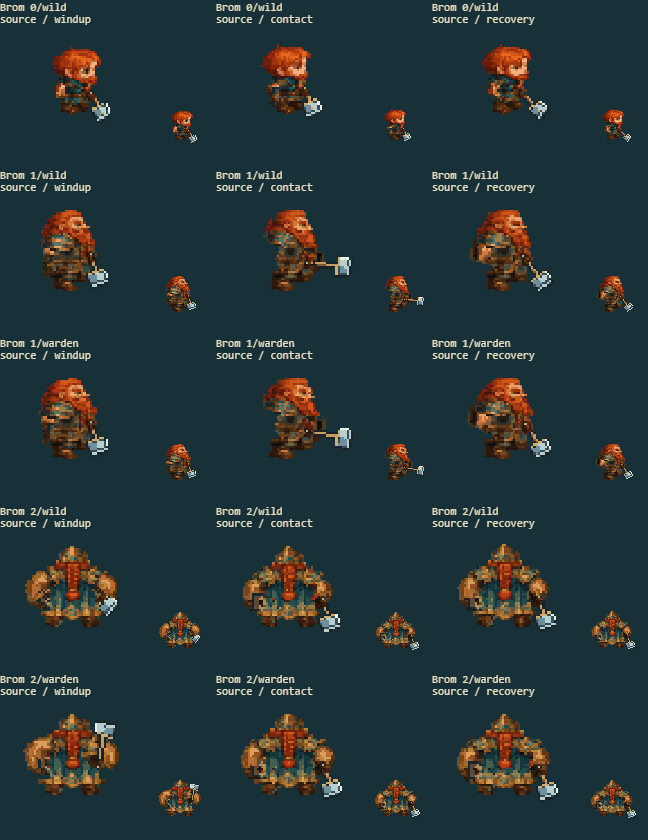
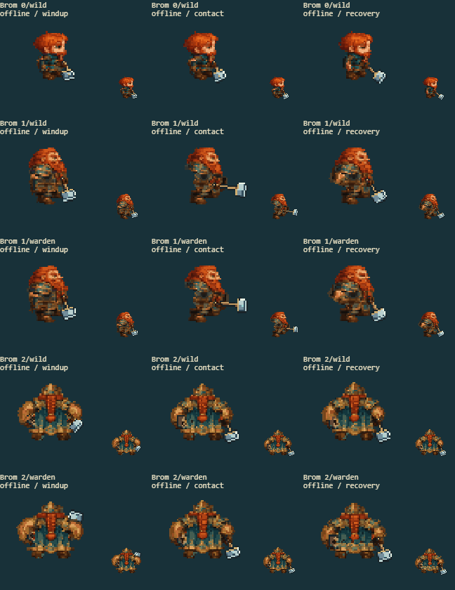

10 separate fights cover every available evolution/path in the source game and rebuilt offline game. The arena keeps combat effects. The other panels show the actual battle sprite at native and enlarged size, before the hit flash.
Full game screenshot · Contact
| Factor | Result | Observed |
|---|---|---|
| Shoulder motion and protected head | pass | The broad bronze shoulder plates lift and roll with the hammer arm while the orange beard stays fixed to the head. |
| Body and clothing backing | pass | The blue coat and armored chest remain solid when the near arm crosses or opens away from the body. |
| Authored materials and palette | pass | Orange beard, bronze armor and blue cloth keep their original color boundaries through the swing. |
| Connected limbs and equipment | pass | The hammer grip and shield arm remain connected; the old resting arm does not remain on the coat. |
| Complete silhouette and cell margins | pass | The apex headgear, rear coat and boot silhouettes remain complete in front, side and rear captures. |
source

offline

All eight facings: art form 0 · art form 1 · art form 2